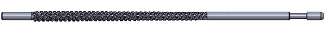
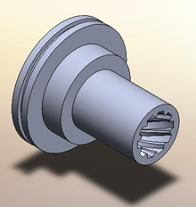
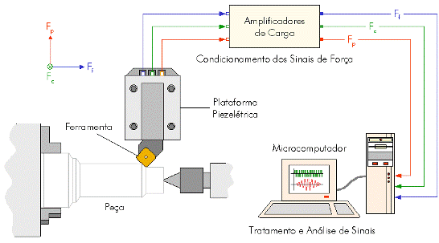
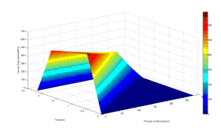

MODELAGEM E SIMULAÇÃO DO PROCESSO DE BROCHAMENTOOBJETIVOSPara que o projeto da brocha tenha um dimensionamento correto, é necessário um profundo conhecimento acerca das solicitações e comportamento da cunha de corte durante a usinagem. Esse conhecimento é necessário à predição de tensões sofridas pela brocha durante a usinagem. Para tal são desenvolvidos modelos matemáticos do processo, que permitem a simulação do processo de corte e análise dos fenômenos ocorridos durante o mesmo. 
Ferramenta de brochamento  Exemplo de peça produzida por brochamento PROCEDIMENTOSA modelagem e simulação da geometria da brocha, da cinemática e dinâmica do processo de corte por brochamento é realizado em um software comercial, tomando como base o movimento relativo entre peça e ferramenta e modelos de força disponíveis na literatura. 
Aquisição de Forças no Torneamento Para alimentar o modelo computacional, são feitos ensaios de torneamento com o objetivo de adquirir sinais de força utilizando uma plataforma piezelétrica. Após feita a modelagem matemática do processo, coeficientes de correção podem ser aplicados para aproximar ainda mais o modelo à realidade. 
Tensão equivalente ao longo da brocha e do tempo Os modelos, então, podem ser aplicados em novos projetos de brochas, prevendo possíveis problemas, e nos projetos atuais, respondendo questões sobre eventuais falhas. |